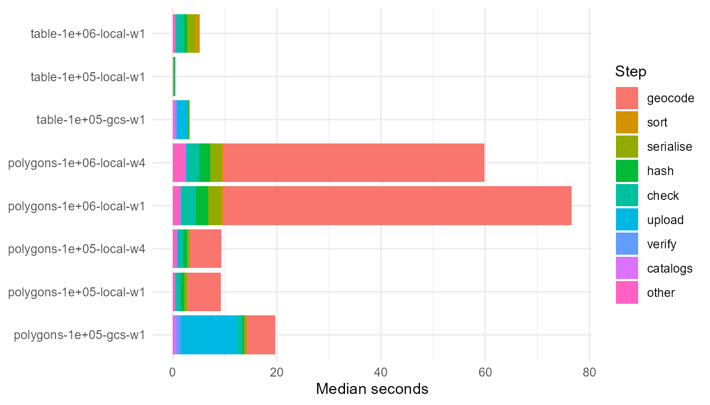

This article reads stored results; it does not run the benchmark. The
script is bench/write.R; its code is shown below as it was
run.
Question
store_write() geocodes geospatial rows, sorts and
partitions them, serialises them to Parquet in a staging folder, hashes
the files, checks sampled rows against x, uploads the
files, verifies their MD5 in the location and switches the catalogs.
Where does the time go, does a second set of geocoding workers
(options(rcs.workers = 4)) help, and what does writing to
Google Cloud Storage cost compared with a local folder?
Setup
env <- write[1, grep("^env_", names(write))]
knitr::kable(data.frame(
item = sub("^env_", "", names(env)),
value = vapply(env, function(v) as.character(v[[1]]), character(1)),
row.names = NULL
))| item | value |
|---|---|
| date | 2026-11-21 08:51:23 |
| commit | f00effc |
| r_version | 4.6.2 |
| os | Windows 10 x64 |
| cpu | Intel64 Family 6 Model 142 Stepping 12, GenuineIntel |
| cores | 8 |
| ram_gb | 31.8 |
| storage | ssd |
| packages | {“rcs”:“0.0.0.9000”,“arrow”:“26.0.1”,“sf”:“1.1.3”,“h3o”:“0.3.0”,“h3jsr”:“1.3.1”,“terra”:“1.9.50”,“duckdb”:“2.0.0”,“bit64”:“4.8.6”} |
Simulated data only: rcs_sim_table() written with its
key and partition = "year", and
rcs_sim_polygons() written with
partition = "h3", each at 1e5 and 1e6 rows. Every
repetition writes into a new, empty store, so every write is a first
write. The cloud store lies under a random prefix of a test bucket,
removed at the end; only 1e5 rows are written there, to keep the uploads
small. Each case is timed with bench_run() (five
repetitions, median reported).
The steps are timed by wrapping the package’s internal step functions
for the duration of the script: geo_encode() (geocode,
which also puts the geospatial rows in written order),
sort_rows() and partition_plan() (sort,
including the choice of the H3 partition resolution),
files_write_parquet() (serialise), md5_file()
(hash), check_staged() (check), be_put()
(upload), be_md5() (verify) and the catalog reads and
writes. A step called inside another one counts only for itself. What is
left of the total (“other”) is argument checks, entries, manifests and
staging-folder housekeeping. The step medians are taken step by step, so
they need not add up exactly to the median total.
root <- normalizePath(Sys.getenv("RCS_BENCH_ROOT", "."), winslash = "/")
devtools::load_all(root, quiet = TRUE)
source(file.path(root, "bench", "harness.R"))
results_dir <- file.path(root, "bench", "results")
rlang::check_installed(c("h3o", "bench", "mirai"))
sizes <- as.numeric(strsplit(Sys.getenv("RCS_BENCH_SIZES", "1e5;1e6"), ";")[[1]])
gcs_root <- Sys.getenv("RCS_TEST_GCS", "")
work <- file.path(tempdir(), "rcs-bench-write")
dir.create(work, recursive = TRUE, showWarnings = FALSE)
options(rcs.quiet = TRUE)
env <- bench_env(storage = "ssd")
env$commit <- tryCatch(
system2("git", c("-C", root, "rev-parse", "--short", "HEAD"), stdout = TRUE),
error = function(e) NA_character_
)
# Internal functions and the step of `store_write()` they belong to. What is
# left of the total is "other": argument checks, catalog entries, manifests.
step_of <- c(
geo_encode = "geocode",
sort_rows = "sort", partition_plan = "sort",
files_write_parquet = "serialise",
md5_file = "hash",
check_staged = "check",
be_put = "upload",
be_md5 = "verify",
location_refresh = "catalogs", location_write = "catalogs",
history_read = "catalogs", catalog_token = "catalogs"
)
steps <- unique(step_of)
step_state <- new.env()
step_state$stack <- character()
step_state$time <- stats::setNames(numeric(length(steps)), steps)
step_state$runs <- list()
step_wrap <- function(fn, step) {
original <- get(fn, envir = asNamespace("rcs"))
force(step)
function(...) {
start <- bench::hires_time()
step_state$stack <- c(step_state$stack, step)
on.exit({
took <- bench::hires_time() - start
depth <- length(step_state$stack)
step_state$stack <- step_state$stack[-depth]
step_state$time[[step]] <- step_state$time[[step]] + took
if (depth > 1) {
parent <- step_state$stack[[depth - 1]]
step_state$time[[parent]] <- step_state$time[[parent]] - took
}
})
original(...)
}
}
steps_install <- function() {
ns <- asNamespace("rcs")
for (fn in names(step_of)) {
if (bindingIsLocked(fn, ns)) unlockBinding(fn, ns)
assign(fn, step_wrap(fn, step_of[[fn]]), envir = ns)
}
}
# Close the step times of one repetition and start the next.
steps_flush <- function() {
if (any(step_state$time != 0)) {
step_state$runs[[length(step_state$runs) + 1L]] <- step_state$time
}
step_state$time[] <- 0
}
# Median seconds of each step over the repetitions flushed so far.
steps_median <- function() {
runs <- do.call(rbind, step_state$runs)
step_state$runs <- list()
out <- apply(runs, 2, stats::median)
stats::setNames(as.list(out), paste0("step_", names(out), "_s"))
}
steps_install()
make_data <- function(kind, n) {
if (kind == "table") rcs_sim_table(n, seed = 1) else rcs_sim_polygons(n, seed = 1)
}
# A new, empty store for every repetition.
counter <- 0L
new_store <- function(location) {
counter <<- counter + 1L
name <- sprintf("store-%03d", counter)
uri <- if (location == "local") file.path(work, name) else paste0(gcs_prefix, "/write/", name)
store_connect(uri, create = TRUE)
}
# Every call writes a new dataset: `bench_run()` evaluates the expression of
# its first repetition twice (once to measure memory), into the same store.
written <- 0L
write_one <- function(st, x, kind) {
written <<- written + 1L
if (kind == "table") {
store_write(st, x, sprintf("sales/daily_%03d", written),
title = "Daily sales", description = "Simulated daily sales.",
key = c("shop_id", "date", "product"), partition = "year"
)
} else {
store_write(st, x, sprintf("shapes/polygons_%03d", written),
title = "Polygons", description = "Simulated polygons in open ocean.",
partition = "h3"
)
}
}
# Locations of a trace as roles, so that no local path is stored.
counters_tidy <- function(counters, st) {
role <- ifelse(counters$location %in% st$primary$uri, "primary",
ifelse(is.na(counters$location), NA_character_, "staging")
)
counters$location <- role
counters$detail[counters$counter == "file_open"] <- NA_character_
groups <- vctrs::vec_group_loc(counters[c("case", "expression", "call", "counter", "detail", "location")])
out <- groups$key
out$n <- vapply(groups$loc, function(i) sum(counters$n[i]), numeric(1))
out
}
# Four local mirai daemons for the geocoding, started once; each loads the
# package from the root, because it is not installed.
start_workers <- function(workers) {
mirai::daemons(workers, .compute = "rcs")
mirai::everywhere(pkgload::load_all(root, quiet = TRUE), root = root, .compute = "rcs")
for (i in 1:120) {
ready <- mirai::mirai_map(seq_len(2 * workers), function(i) isNamespaceLoaded("rcs"), .compute = "rcs")[]
if (all(unlist(ready))) break
Sys.sleep(1)
}
}
cases <- expand.grid(
kind = c("table", "polygons"), n = sizes, location = "local", workers = c(1L, 4L),
stringsAsFactors = FALSE
)
cases <- cases[!(cases$kind == "table" & cases$workers == 4L), ]
if (nzchar(gcs_root)) {
gcs_prefix <- paste0(sub("/+$", "", gcs_root), "/bench-", substr(md5_string(paste(Sys.time(), stats::runif(1))), 1, 10))
cases <- rbind(cases, data.frame(kind = c("table", "polygons"), n = 1e5, location = "gcs", workers = 1L))
}
cases <- cases[cases$n %in% sizes, ]
run_cases <- function() {
timed <- list()
counted <- list()
for (kind in unique(cases$kind)) {
for (n in unique(cases$n[cases$kind == kind])) {
x <- make_data(kind, n)
x_bytes <- as.numeric(utils::object.size(x))
todo <- cases[cases$kind == kind & cases$n == n, ]
for (i in seq_len(nrow(todo))) {
location <- todo$location[[i]]
workers <- todo$workers[[i]]
case <- paste(kind, format(n, scientific = TRUE), location, paste0("w", workers), sep = "-")
cli::cli_inform("Timing {case}.")
if (workers > 1) start_workers(workers)
options(rcs.workers = workers)
step_state$time[] <- 0
step_state$runs <- list()
row <- bench_run(
write = write_one(st, x, kind),
case = case,
setup = quote({
steps_flush()
st <- new_store(location)
step_state$time[] <- 0
})
)
steps_flush()
row <- cbind(row, tibble::as_tibble(steps_median()))
row$kind <- kind
row$rows <- n
row$location <- location
row$workers <- workers
row$x_bytes <- x_bytes
if (workers == 1) {
st <- new_store(location)
counters <- bench_counters(write_one(st, x, kind), case = case, expression = "write")
row$bytes_written <- sum(counters$n[counters$counter == "bytes_up"])
counted[[case]] <- counters_tidy(counters, st)
} else {
row$bytes_written <- NA_real_
}
timed[[case]] <- row
options(rcs.workers = 1)
if (workers > 1) mirai::daemons(0, .compute = "rcs")
unlink(list.files(work, full.names = TRUE), recursive = TRUE)
}
rm(x)
gc()
}
}
list(timed = do.call(rbind, timed), counted = do.call(rbind, counted))
}
remove_gcs_prefix <- function() {
if (!exists("gcs_prefix")) {
return(invisible())
}
be <- be_new(gcs_prefix)
left <- be_list(be)
if (nrow(left) > 0) be_delete(be, left$path)
cli::cli_inform("Removed {nrow(left)} object{?s} under the benchmark prefix.")
}
out <- tryCatch(run_cases(), finally = remove_gcs_prefix())
out$timed$rows_per_s <- out$timed$rows / out$timed$median_s
bench_save(out$timed, "write", env = env, dir = results_dir)
bench_save(out$counted, "write-counters", env = env, dir = results_dir)
unlink(work, recursive = TRUE)Results
shown <- write[c("case", "n", "median_s", "min_s", "max_s", "rows_per_s", "bytes_written")]
shown$median_s <- signif(shown$median_s, 3)
shown$min_s <- signif(shown$min_s, 3)
shown$max_s <- signif(shown$max_s, 3)
shown$rows_per_s <- round(shown$rows_per_s)
knitr::kable(shown, format.args = list(big.mark = ","))| case | n | median_s | min_s | max_s | rows_per_s | bytes_written |
|---|---|---|---|---|---|---|
| table-1e+05-local-w1 | 5 | 0.531 | 0.521 | 1.15 | 188,386 | 2,841,194 |
| table-1e+05-gcs-w1 | 5 | 3.210 | 3.150 | 4.00 | 31,143 | 2,841,196 |
| table-1e+06-local-w1 | 5 | 5.200 | 5.080 | 5.32 | 192,414 | 28,344,417 |
| polygons-1e+05-local-w1 | 5 | 9.280 | 8.830 | 11.30 | 10,775 | 10,757,075 |
| polygons-1e+05-local-w4 | 5 | 9.310 | 8.860 | 9.85 | 10,744 | NA |
| polygons-1e+05-gcs-w1 | 5 | 19.700 | 19.100 | 22.70 | 5,073 | 10,757,073 |
| polygons-1e+06-local-w1 | 5 | 76.600 | 75.300 | 86.60 | 13,052 | 104,507,312 |
| polygons-1e+06-local-w4 | 5 | 59.800 | 56.300 | 60.70 | 16,709 | NA |
bytes_written is the total of the bytes_up
counter of one write (data files, index table, manifests and catalogs)
for the cases with one worker.
steps <- write[c("case", paste0("step_", step_names, "_s"))]
names(steps) <- c("case", step_names)
steps$other <- pmax(write$median_s - rowSums(steps[step_names]), 0)
long <- data.frame(
case = rep(steps$case, times = length(step_names) + 1),
step = factor(rep(c(step_names, "other"), each = nrow(steps)), levels = c(step_names, "other")),
seconds = unlist(steps[c(step_names, "other")], use.names = FALSE)
)
share <- steps
share[c(step_names, "other")] <- round(100 * steps[c(step_names, "other")] / write$median_s)
knitr::kable(share, caption = "Share of the median write time per step, in percent.")| case | geocode | sort | serialise | hash | check | upload | verify | catalogs | other |
|---|---|---|---|---|---|---|---|---|---|
| table-1e+05-local-w1 | 0 | 4 | 28 | 16 | 12 | 7 | 0 | 12 | 21 |
| table-1e+05-gcs-w1 | 0 | 1 | 5 | 2 | 2 | 63 | 11 | 14 | 2 |
| table-1e+06-local-w1 | 0 | 16 | 31 | 11 | 30 | 2 | 0 | 1 | 8 |
| polygons-1e+05-local-w1 | 70 | 0 | 6 | 7 | 9 | 3 | 0 | 1 | 4 |
| polygons-1e+05-local-w4 | 65 | 0 | 6 | 7 | 11 | 3 | 0 | 1 | 8 |
| polygons-1e+05-gcs-w1 | 28 | 0 | 2 | 1 | 5 | 54 | 4 | 2 | 1 |
| polygons-1e+06-local-w1 | 87 | 1 | 3 | 3 | 4 | 0 | 0 | 0 | 2 |
| polygons-1e+06-local-w4 | 84 | 0 | 4 | 4 | 4 | 0 | 0 | 0 | 4 |
library(ggplot2)
ggplot(long, aes(x = seconds, y = case, fill = step)) +
geom_col() +
labs(x = "Median seconds", y = NULL, fill = "Step") +
theme_minimal()
One against four geocoding workers, polygons:
poly <- write[write$kind == "polygons" & write$location == "local", ]
workers <- data.frame(
rows = unique(poly$rows),
total_1 = sapply(unique(poly$rows), function(r) poly$median_s[poly$rows == r & poly$workers == 1]),
total_4 = sapply(unique(poly$rows), function(r) poly$median_s[poly$rows == r & poly$workers == 4]),
geocode_1 = sapply(unique(poly$rows), function(r) poly$step_geocode_s[poly$rows == r & poly$workers == 1]),
geocode_4 = sapply(unique(poly$rows), function(r) poly$step_geocode_s[poly$rows == r & poly$workers == 4])
)
workers[-1] <- signif(workers[-1], 3)
knitr::kable(workers, format.args = list(big.mark = ","))| rows | total_1 | total_4 | geocode_1 | geocode_4 |
|---|---|---|---|---|
| 1e+05 | 9.28 | 9.31 | 6.5 | 6.05 |
| 1e+06 | 76.60 | 59.80 | 67.0 | 50.30 |
Local folder against the cloud bucket, 1e5 rows, one worker:
cloud <- write[write$rows == 1e5 & write$workers == 1, c("kind", "location", "median_s", "step_upload_s", "step_verify_s", "step_catalogs_s", "bytes_written")]
cloud$upload_mb_per_s <- round(cloud$bytes_written / 1e6 / cloud$step_upload_s, 1)
cloud[3:6] <- lapply(cloud[3:6], signif, 3)
knitr::kable(cloud[order(cloud$kind, cloud$location), ], format.args = list(big.mark = ","))| kind | location | median_s | step_upload_s | step_verify_s | step_catalogs_s | bytes_written | upload_mb_per_s |
|---|---|---|---|---|---|---|---|
| polygons | gcs | 19.700 | 10.7000 | 0.84600 | 0.4920 | 10,757,073 | 1.0 |
| polygons | local | 9.280 | 0.2490 | 0.00645 | 0.0848 | 10,757,075 | 43.2 |
| table | gcs | 3.210 | 2.0200 | 0.35200 | 0.4390 | 2,841,196 | 1.4 |
| table | local | 0.531 | 0.0354 | 0.00094 | 0.0628 | 2,841,194 | 80.3 |
Backend calls of one write (work counters, deterministic):
calls <- counters[counters$counter == "backend_call", ]
calls <- stats::aggregate(n ~ case + location + detail, data = calls, FUN = sum)
wide <- stats::reshape(calls, idvar = c("case", "location"), timevar = "detail", direction = "wide")
names(wide) <- sub("^n\\.", "", names(wide))
wide[is.na(wide)] <- 0
knitr::kable(wide[order(wide$case, wide$location), ], row.names = FALSE)| case | location | be_arrow_fs | be_exists | be_get | be_lock | be_md5 | be_put | be_unlock |
|---|---|---|---|---|---|---|---|---|
| polygons-1e+05-gcs-w1 | primary | 0 | 1 | 3 | 1 | 5 | 33 | 1 |
| polygons-1e+05-gcs-w1 | staging | 56 | 0 | 0 | 0 | 0 | 0 | 0 |
| polygons-1e+05-local-w1 | primary | 0 | 1 | 3 | 1 | 5 | 33 | 1 |
| polygons-1e+05-local-w1 | staging | 56 | 0 | 0 | 0 | 0 | 0 | 0 |
| polygons-1e+06-local-w1 | primary | 0 | 1 | 3 | 1 | 5 | 33 | 1 |
| polygons-1e+06-local-w1 | staging | 56 | 0 | 0 | 0 | 0 | 0 | 0 |
| table-1e+05-gcs-w1 | primary | 0 | 1 | 3 | 1 | 4 | 5 | 1 |
| table-1e+05-gcs-w1 | staging | 4 | 0 | 0 | 0 | 0 | 0 | 0 |
| table-1e+05-local-w1 | primary | 0 | 1 | 3 | 1 | 4 | 5 | 1 |
| table-1e+05-local-w1 | staging | 4 | 0 | 0 | 0 | 0 | 0 | 0 |
| table-1e+06-local-w1 | primary | 0 | 1 | 3 | 1 | 4 | 18 | 1 |
| table-1e+06-local-w1 | staging | 30 | 0 | 0 | 0 | 0 | 0 | 0 |
Verdict
- Polygons: geocoding is the largest step, 87% of a write of 1,000,000 polygons with one worker (13,052 rows per second in all). The H3 partition choice (in “sort”) now works on the distinct cells and takes 1%; serialising 3% and the serialization check 4%.
- Tables: 192,414 rows per second at 1,000,000 rows. The serialization check restores only the sampled rows and takes 30% of the write, about as much as serialising (31%); it still reads one row group of every file, so it grows with the number of files.
- Four workers against one: 76.6 s against 59.8 s for 1,000,000
polygons (geocode 67 s against 50.3 s, a factor of 1.3). At 1e5 rows
four workers cannot help: the rows form one chunk of
rcs.chunk_size(1e5 when this was measured), and only chunks are shared out. The gain stays well below four because the rows that are costly to geocode, those crossing cell edges, all lie in the first chunks of the simulated data, and the machine has four physical cores. In a separate check on 2e5 polygons with four workers, chunks of 5e4 rows took 6.3 to 8.1 s against 8.5 to 9.1 s for 1e5 (one run each, three for the pair), chunks of 2.5e4 no less, and spreading the rows over the chunks in turn did not help; with one worker, the default, the chunk size made no difference. The defaultrcs.chunk_sizeis now 1e4, so that geocoding can show progress over the chunks; the runs above used 1e5. - The cloud bucket adds the upload: 19.7 s against 9.28 s for 1e5 polygons, 3.21 s against 0.531 s for 1e5 table rows. MD5 verification reads object metadata and costs 0.85 s per write, small next to the upload.
Limits
- One machine, quiet while this benchmark ran (no other agent);
absolute times still carry some noise (compare
min_swithmedian_s). - The cloud upload speed is that of this machine’s network connection; it bounds every cloud number here.
- The step times come from wrapping internal functions; the wrappers add a few microseconds per call, and the H3 partition choice is reported inside “sort”.
-
bench_run()measures memory (mem_alloc_bytes, R allocations only) in a separate evaluation of the first repetition; peak memory is measured inbenchmark-scale.Rmd. - Writes with history, updates and replaces of existing datasets, and secondaries are not measured here.